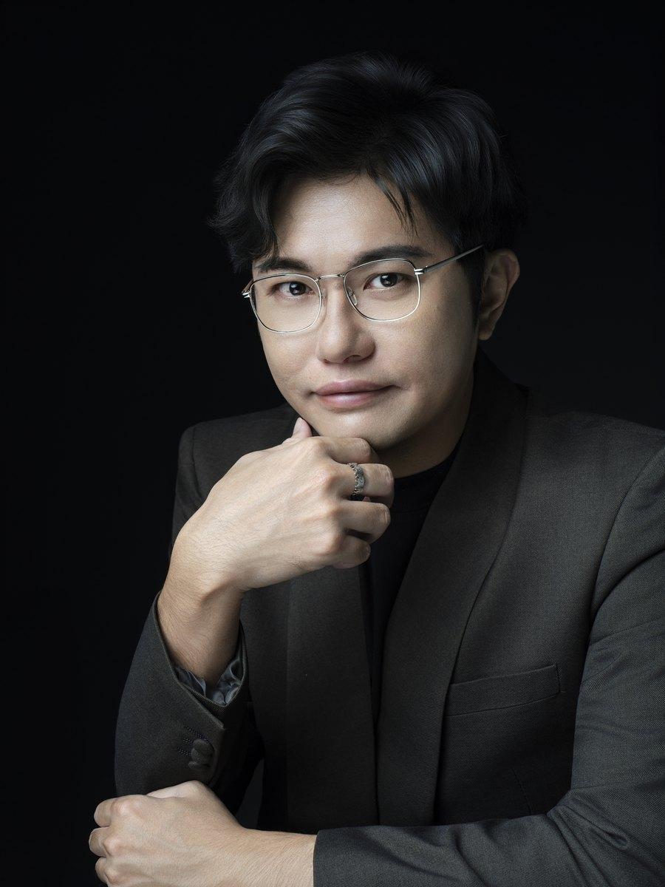

高階主管形象
董事長、執行長與經營團隊的個人形象定位與拍攝，用於官網、媒體與投資人溝通。
Enterprise·Executive & Team Image System
One organization. One coherent visual signal.
CHUN.EN 提供企業主管、員工及專業團隊的企業形象照與形象規劃，整合造型、拍攝安排及影像應用需求，協助企業建立一致且符合使用情境的專業形象。

When You Need This適用情境
Track Record專案經驗
CHUN.EN 曾參與大型企業及醫療院所的形象造型專案，累積團隊妝髮安排、人員協調與現場執行經驗。
董事長、執行長與經營團隊的個人形象定位與拍攝，用於官網、媒體與投資人溝通。
統一光線、構圖與造型方向的團隊拍攝，讓組織頁與提案文件呈現一致氣質。
建立可交付內部與後續攝影團隊沿用的拍攝規範：場景、服裝、妝髮與影像規格。
新任主管補拍、年度更新與活動支援，維持組織對外視覺的長期一致。
如需求包含品牌識別（Logo、色彩、字體）等完整企業識別設計，將於初談時確認範圍並協同合作，避免期待落差。
拍攝前怎麼盤點名單與使用版位、多人照片怎麼維持一致，見〈企業形象照怎麼規劃〉。
企業主管形象照為什麼常常沒有帶來更多信任，以及主管的存在感從哪裡來，見〈企業主管形象照的信任訊號〉與〈Executive Presence 是什麼〉。
Planning專案安排
CHUN.EN 可依企業的照片用途、人數、工作時段與場地條件，規劃主管照、員工照及團隊合照，並整合妝髮造型與攝影執行。
了解組織現況、對外露出場景與期待，確認範圍與時程。
依人數、場景數與交付規格提出正式報價與執行計畫。
造型、妝髮與拍攝依規劃執行；影像依用途規格交付。
視需求建立年度合作，支援組織成長中的形象更新。